This page brings together basic information about the Balinese script and its use for the Balinese language. It aims to provide a brief, descriptive summary of the modern, printed orthography and typographic features, and to advise how to write Balinese using Unicode.
Phonetic transcriptions on this page should be treated as an approximate guide, only. Many are more phonemic than phonetic, and there may be variations depending on the source of the transcription.
The Balinese script is used for writing the Balinese language spoken on the Indonesian islands of Java and Bali. It may also be used for Old Javanese, and liturgical Sanskrit. With some additions, it is also used to write Sasak in the neighbouring island of Lombok.
Everyday use of the script has largely been eclipsed by the Latin alphabet, but Balinese has a significant presence in traditional ceremonies and texts of the Hindu religion. It is also used for signage on roads, at the entrances to villages, and on government buildings. Traditional literature is published on a small scale, but little modern literature. Sekaha Pesantian community groups gather to read the Balinese script in a social context, commonly in song form.
ᬅᬓ᭄ᬱᬭᬩᬮᬶạk͓ṡ̂rbliaksara baliBalinese script
Balinese script is derived from Old Kawi, and ultimately from Brahmi. Historically, Balinese was written on palm leaves or inscribed in stone. Its similarity to the Javanese script in form and behaviour leads some to propose that they are typological variants of each other.
The script is an abugida. Consonants carry an inherent vowel a, although that is pronounced ə at the end of a word. See the table to the right for a brief overview of features for the Balinese language.
Balinese text runs left to right in horizontal lines.
Words are not separated by spaces, however syllables may be separated by ZWSP, as long as they don't fall inside a stack.
The 18 consonant letters used for pure Balinese words are supplemented by 15 more derived from Sanskrit and Kawi words, some of which are used as honorifics, a little like capital letters. Repertoire extensions for 8 non-native sounds are achieved by applying the rerekan diacritic to characters.
Consonant clusters are represented by stacked consonants (many subjoined consonants have alternative shapes) or conjoined pairs. Occasionally, a visible adeg adeg is used.
Stacked consonants and conjoined pairs span word boundaries.
Syllable-initial clusters use
3 subjoined versions of ordinary consonants or vocalics
for the second consonant.
Word-final consonant sounds may be represented by
3 final-consonant diacritics. Otherwise, if nothing follows, they are
ordinary consonants followed by a visible
᭄ [U+1B44 BALINESE ADEG ADEG].
The Balinese orthography has an inherent vowel, and represents vowels using 11 vowel-signs (including 2 pre-base and 6 circumgraphs, most of which can decompose into composite vowels). All vowel-signs are combining marks, and are stored after the base character.
Independent vowels are used at the beginning of a word for standalone vowel sounds. Inside a word these are written using vowel-signs applied to ᬳ [U+1B33 BALINESE LETTER HA].
Balinese has no composite vowels, in principle, however the 6 circumgraphs can also be decomposed into 2 parts. Those can involve up to 2 glyphs, and glyphs can surround the base consonant(s) on up to 3 sides.
Balinese has vocalics.
Character index
Letters
Show
Basic consonants
ᬧ␣ᬩ␣ᬢ␣ᬤ␣ᬘ␣ᬚ␣ᬓ␣ᬕ␣ᬲ␣ᬳ␣ᬫ␣ᬦ␣ᬗ␣ᬜ␣ᬯ␣ᬭ␣ᬮ␣ᬬ
Extended consonants
ᬞ␣ᬟ␣ᬠ␣ᬔ␣ᬛ␣ᬨ␣ᬝ␣ᬣ␣ᬥ␣ᬖ␣ᬰ␣ᬱ␣ᬡ␣ᬪ␣ᬙ
Vowels
ᬇ␣ᬈ␣ᬉ␣ᬊ␣ᬏ␣ᬑ␣ᬅ␣ᬆ␣ᬐ␣ᬒ
Vocalics
ᬋ␣ᬌ␣ᬍ␣ᬎ
Not used for Balinese
ᭅ␣ᭆ␣ᭇ␣ᭈ␣ᭉ␣ᭊ␣ᭋ
Combining marks
Show
Vowel-signs
ᬾ␣ᬿ␣ᭀ␣ᭃ␣ᭁ␣ᬶ␣ᬷ␣ᬸ␣ᬹ␣ᭂ␣ᬵ
Vocalic
ᬺ␣ᬻ␣ᬼ␣ᬽ
Bindu
ᬀ␣ᬁ␣ᬂ
Finals
ᬃ
Nukta
᬴
Virama
᭄
Visarga
ᬄ
Numbers
Show᭐␣᭑␣᭒␣᭓␣᭔␣᭕␣᭖␣᭗␣᭘␣᭙
Punctuation
Show᭚␣᭛␣᭜␣᭝␣᭞␣᭟␣᭠
Other
Show␣
Character lists show:
Phonology
The following represents the repertoire of the Balinese language.
Click on the sounds to see where else in the document they are referred to.
Phones in a lighter colour are non-native or allophones
.
Vowel sounds
Plain vowels
Diphthongs
Consonant sounds
labial
dental
alveolar
post-
alveolar
palatal
velar
pharyngeal
glottal
stop
pb
td
kɡ
affricate
t͡ʃd͡ʒ
fricative
fv
sz
xɣ
ħʕ
h
nasal
m
n
ɲ
ŋ
approximant
w
l
j
trill/flap
r
Vowels
Click on the characters in the lists for detailed information. For a mapping of sounds to graphemes see vowel_mappings.
Inherent vowel
a following a consonant is not written, but is seen as an inherent part of the consonant letter, so ka is written by simply using the consonant letter ᬓ [U+1B13 BALINESE LETTER KA].
However, the inherent vowel is pronounced ə at the end of a word and also in prefixes ma-, pa- and da-.
An orthography that uses vowel-signs is different from one that uses simple diacritics or letters for vowels, in that the vowel-signs are generally attached to the syllable, rather than just applied to the letter of the immediately preceding consonant. This means that pre-base vowel-signs and the left glyph of circumgraphs appears before a whole consonant cluster if it is rendered as a conjunct (see prescript_vowels).
Balinese vowel-signs are all combining characters. In principle a single Unicode character is used per base consonant, even if the vowel-signs appear on both sides of the base consonant, however 5 vowel-signs decompose to more than one character (see circumgraphs). All vowel-signs are typed and stored after the base consonant, and the glyph rendering system takes care of the positioning at display time.
The majority of the vowel-signs are spacing marks, meaning that they consume horizontal space when added to a base consonant.
Combining marks used for vowels
Balinese uses the following dedicated combining marks for vowels.
Two vowel-signs appear to the left of the base consonant letter or cluster, eg. ᬘᬾᬂᬘᬾᬂ
These are combining marks that are always stored after the base consonant. The font places the glyph before the base consonant.
Because the vowel-sign is attached to the syllable, rather than the consonant it modifies, these glyphs appear to the left of any stacked consonants, or any syllable initial cluster.
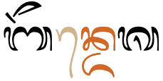
A pre-base vowel-sign in the word ᬩᭂᬦ᭄ᬤᬾᬰ. Although stored after d, it appears before the nde syllable.
Circumgraphs
ᭀ␣ᭃ␣ᭁ␣ᬻ␣ᬼ␣ᬽ
This section includes some vowel-signs described in the section vocalics.
These vowel-signs are usually produced by a single combining character with visually separate parts, that appear on different sides of the consonant onset, eg.
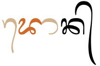
A circumgraph in the word ᬤᭀᬦ᭄. The right-hand side ligates with the base character in this font.
Glyphs can appear on up to 3 sides of the base.
Standalone vowels
Balinese has 2 ways to represent standalone vowels.
Vowel-signs
ᬳᬶ␣ᬳᬷ␣ᬳᬸ␣ᬳᬹ␣ᬳᬾ␣ᬳᭀ␣ᬳᭂ␣ᬳᭃ␣ᬳᬵ␣ ␣ᬳᬿ␣ᬳᭁ
Typically, a standalone vowel is represented by a vowel-sign attached to ᬳ [U+1B33 BALINESE LETTER HA], which acts as a carrier, eg.
ᬤᬳᬾᬭᬄ
However, it may be unclear from the written text whether ᬳ[U+1B33 BALINESE LETTER HA] represents the sound h or is used as a carrier for a vowel, eg. compare
ᬳᬶᬕᬳᬶᬕᭂᬮ᭄
Independent vowels
At the beginning of a word, most standalone vowels are represented using one of the 10 independent vowel characters. The set includes a character to represent the inherent vowel sound.
In Sasak, independent vowel ᬅ[U+1B05 BALINESE LETTER AKARA] can be followed by an explicit ◌᭄[U+1B44 BALINESE ADEG ADEG] in word- or syllable-final position, where it indicates the glottal stop. Other consonants can also be subjoined to it. eg. ᬳᬫᬅ᭄hmạ͓amaʔ
Vowel suppression
Balinese uses ᭄[U+1B44 BALINESE ADEG ADEG] (the Balinese equivalent of the Sanskrit virama) to kill the inherent vowel after a consonant.
The adeg adeg is always visible at the end of a word that ends in consonant, eg.
ᬧᬦᬓ᭄
It is usually hidden (with occasional exceptions) when the consonant is part of a consonant cluster (see clusters).
Sometimes it is used to clarify the distinction between a word-final consonant and a medial consonant by preventing the stacking of the final consonant in the previous word and the first consonant in the next, eg. compare:
ᬧᬓ᭄ᬭᬫᬦ᭄ᬧᬓ᭄ᬭᬫᬦ᭄
Vowel sounds mapped to characters
The following tables show how the above vowel sounds commonly map to characters or sequences of characters.
Word-internal standalone vowels (and word-initial in the case of ə and əː) use the vowel-sign over a silent ᬳ [U+1B33 BALINESE LETTER HA]. Vowel-signs that decompose are shown only in precomposed form.
The following list shows where vowel-signs, including vocalics, are positioned around a base consonant to produce vowels, and how many instances of that pattern there are.
2 pre-base, eg. ᬓᬾ ᬓᬿ
1 post-base, eg. ᬓᬵkɑ̄
3 above-base, eg. ᬓᬶ ᬓᬷ ᬓᭂ
3 below-base, eg. ᬓᬸ ᬓᬹ ᬓᬺ
2 pre+post-base, eg. ᬓᭀ ᬓᭁ
1 below+post-base, eg. ᬓᬻ
1 below+above-base, eg. ᬓᬼ
1 below+above+post-base, eg. ᬓᬽ
1 above+post-base, eg. ᬓᭃkə̄
At maximum, vowel components can occur concurrently on 3 sides of the base.
Vocalics
ᬋ␣ᬌ␣ᬍ␣ᬎ␣ᬺ␣ᬻ␣ᬼ␣ᬽ
At the beginning of a syllable the vocalic is treated as a consonant, eg.
ᬓᭂᬋᬂᬢᬍᬃ
As a second component in a consonant cluster, the vocalic ra repa has a postfixed form and a subjoined form.
When the sound occurs after a syllable-initial consonant, ie. as a medial consonant in the same syllable, use the vowel-sign which produces the subjoined form. The sequence of characters here is simply C + ᬺ [ consonant + U+1B3A BALINESE VOWEL SIGN RA REPA], eg.
ᬓᬺᬰ᭄ᬡ
When the sound occurs after a syllable-final consonant, ie. as the start of a new syllable, use the conjoined (postfix) form . The sequence of Unicode characters is C + ᭄ + ᬋ [ consonant + U+1B44 BALINESE ADEG ADEG + U+1B0B BALINESE LETTER RA REPA], eg.
ᬧᬓ᭄ᬋᬋᬄ
Consonants
Click on the characters in the lists for detailed information. For a mapping of sounds to graphemes see vowel_mappings.
Basic consonants
Only 18 of the consonants in the Balinese Unicode block are used for pure Balinese language text. The remainder are used for words derived from Sanskrit or Kawi.
The characters listed here and in the following sections also have conjoined and/or subjoined forms, which may differ significantly from those shown here. See clusters for a list of glyph shapes.
This section lists the basic 18 consonants known as ᬅᬓ᭄ᬱᬭᬯᬺᬱᬵᬲ᭄ᬢ᭄ᬭaksara wreṣāstra.
Stops & affricates
ᬧ␣ᬩ␣ᬢ␣ᬤ␣ᬘ␣ᬚ␣ᬓ␣ᬕ
Fricatives
ᬲ␣ᬳ
Nasals
ᬫ␣ᬦ␣ᬗ␣ᬜ
Liquids
ᬯ␣ᬭ␣ᬮ␣ᬬ
ᬳ [U+1B33 BALINESE LETTER HA] at the beginning of a word or after a preceding vowel is mostly used as a support for a vowel-sign (see independentvowels), and is not pronounced or transcribed. Word finally with a suffix vowel, however, it is transcribed.loc
Additional/honorific consonants
These are called ᬅᬓ᭄ᬱᬭᬰ᭄ᬯᬮᬮᬶᬢạk͓ṡ̂rŝ͓wllitaksara sualalita.
Many of the additional consonants are commonly used in words originating from Arabic and Dutch, and are most common in north Bali and Lombok. When used in pure Balinese words, they are similar to capital letters and are used to create an honorific effect. There are similar characters in Javanese.
They don't add any consonant sounds to the Balinese repertoire. In words originating from Sanskrit, Old Javanese, or Old Balinese, they represent aspirated or other consonants.loc
(It is possible that an original ai may have been lost in Balinese, to be replaced by the glyph for jʰa.)
A number of the Sanskrit or Kawi consonants are rather poorly attested. The letter ᬙ[U+1B19 BALINESE LETTER CA LACA] is only found in non-initial position following ᬘ [U+1B18 BALINESE LETTER CA], ie. ᬘ᭄ᬙc͓CMost of the series that originally represented retroflex sounds is often omitted in books about the script.
Rerekan
The combining mark ᬴[U+1B34 BALINESE SIGN REREKAN] is used, as is a similar sign in Javanese, to extend the character repertoire for foreign sounds.
ᬧ᬴␣ᬯ᬴␣ᬚ᬴␣ᬓ᬴␣ᬕ᬴␣ᬳ᬴␣ᬗ᬴␣ᬤ᬴
The first 7 of the 8 listed above are attested in Library of Congress transliterations and in earlier Sasak orthography. The 8th, ᬤ᬴ could be used for one-to-one transliteration for Javanese ɖ.
In rendering, the dots of these letters appear above the top character, which can cause some ambiguity in reading. The following are all visually indistinguishable:
ᬓ᬴᭄ᬚkˑ͓ʤxjaᬓ᭄ᬚ᬴k͓ʤˑkzaᬓ᬴᭄ᬚ᬴kˑ͓ʤˑxza
In practice these combinations are probably rather rare.
Sasak
In recent times, Sasak users abandoned the use of the Javanese-influenced rerekan in favour of a series of modified letters (see above), making use, in addition, of some of unused Kawi letters for the Arabic sounds. In place of ᬓ᬴x and ᬕ᬴ɣ, for instance, the new fusion of KA and HA, ᭆ[U+1B46 BALINESE LETTER KHOT SASAK] and the Kawi letter ᬖ[U+1B16 BALINESE LETTER GA GORA] are used.
(Does the fact that these relate to aspirated or retroflex forms originally affect the pronunciation?)
ᭅ␣ᭆ␣ᭇ␣ᭈ␣ᭉ␣ᭊ␣ᭋ
Medial consonants
᭄ᬭ␣᭄ᬮ␣᭄ᬬ
The consonants ya, ra, la and wa regularly appear immediately after the initial consonant in a syllable. Unlike Javanese, Balinese has no special characters for these medial sounds (other than the vocalics mentioned earlier); they are just written using the normal approach for dealing with consonant clusters, eg.
ᬓ᭄ᬭᬫ
Multiple medials can occur: r or l can be followed by w or y, eg.
ᬩ᭄ᬭ᭄ᬬᬕ᭄
In addition, the vocalics can produce consonant sounds (tied to a specific vowel) in medial position, eg.
ᬓᬺᬰ᭄ᬡ
See clusters for more details on shaping of glyphs.
Word-final consonants
Word-final consonant sounds with no following consonant are by default represented by ordinary consonant characters, followed by a visible ᭄[U+1B44 BALINESE ADEG ADEG] character, eg.
ᬓᬵᬤᭂᬧ᭄ᬓᬧᬮ᭄
However, there is also a set of combining characters that don't need to be followed by the adeg adeg.
A syllable-final diacritic may appear above a stack. It is typed and stored after the other components in the stack, eg.
ᬩᬗ᭄ᬓᬸᬂ
When the syllable has a spacing vowel-sign, any above-base final-consonant mark appears over the base character, rather than over the vowel-sign. This is positioned by the font; the final consonant mark is still typed and stored after the other syllable components, eg.
ᬕᭂᬤᭀᬂ
A dedicated final consonant mark followed by a regular consonant.
Stacked and conjoined consonant clusters are referred to as conjuncts.
In Unicode, the stacking and conjoining behaviour is achieved by adding ᭄ [U+1B44 BALINESE ADEG ADEG] between the consonants. The font hides the glyph automatically when a conjunct is formed.
Word boundaries. Conjuncts span word boundaries. Because there are no spaces between words, a cluster is created when a consonant with no following vowel at the end of a word is followed by a consonant at the beginning of the next word.
In the sequence of words kahanan lan kwasa the initial consonant of each word is subjoined below the final consonant of the preceding word.
Stacks and conjoined sequences are not normally split at line ends (see word and linebreak for the ramifications of this).
Stacking
To represent consonants without intervening vowels, the non-initial consonant is typically drawn below the initial consonant, and with a slightly different shape.
Many of the subjoined forms are just slightly smaller versions of the original, but several have very different shapes altogether, most of which ligate with the cluster initial consonant by joining strokes.
There can be up to 3 consonants combined in this way, and the third consonant must be one of ya, ra, la or wa.
This list shows consonants in their normal and subjoined forms
In conjoined clusters, the consonant glyphs remain side by side, but the non-initial consonant is reduced on the left side. fig_conjoined_s shows an example in the word ᬅᬓ᭄ᬱᬭ.
This list shows consonants in their normal and conjoined forms
native letters
ᬧ᭄ᬧ␣ᬲ᭄ᬲ␣ᬋ᭄ᬋ
Kawi letters
ᬨ᭄ᬨ␣ᬱ᭄ᬱ
The conjoined ᬲ [U+1B32 BALINESE LETTER SA] is unusual in that it also adds a stroke below the initial consonant. This helps distinguish it from the conjoined p. See fig_conjoined_sa for an example in the word ᬧᬓ᭄ᬲ.
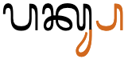
ᬲ [U+1B32 BALINESE LETTER SA] when conjoined not only loses some of its left side but also adds a glyph below the initial consonant.
Visible adeg adeg
Because there is no word separator, consonants at the end of one word and beginning of the following word are normally stacked, too.
In some cases this leads to ambiguity about whether this is one or two words. If you really want to make clear which is which, you can use an explicit adeg-adeg, eg. compare
ᬧᬓ᭄ᬭᬫᬦ᭄ᬧᬓ᭄ᬭᬫᬦ᭄
The Unicode Standard recommends the use of [U+200C ZERO WIDTH NON-JOINER] (ZWNJ) after the adeg-adeg in order to prevent conjunct formation. However, not many people understand the function of ZWNJ or can access it easily from the keypad. It also doesn't introduce line-break opportunities. A better solution may be to use [U+200B ZERO WIDTH SPACE] (ZWSP). This character is needed anyway on most systems in order to allow line-breaking, and it appears to work equally well for this.
A somewhat ambiguous situation arises where conventions prevent certain combinations stacking. For example, the name of the village tamblung should not stack the mbl, but should look like
ᬢᬫ᭄ᬩ᭄ᬮᬂ
The Unicode Standard advises to use a zero-width non-joiner after ma, to achieve this.
Observation: Note that this may also be achieved by intelligence in the font, as was actually the case when I generated this example (click on it to see). It's not clear to me what is the preferred approach: put ZWNJ in only when the font doesn't do what you want, or use it always. The latter may lead to more consistent content where different fonts are applied to the text (eg. after cut and paste). In theory, this shouldn't affect searching and sorting, although some applications may not ignore the ZWNJ as they should.
Dedicated final marks
Balinese represents some final consonants using dedicated marks (see finals). Such final marks are followed by ordinary consonant shapes in consonant clusters. There is no visual indication of missing vowel sounds other than the use of the mark itself.
A cluster involving a dedicated final mark doesn't form a conjunct. (Word shown is ᬓᬃᬡ
.)
Consonant sounds to characters
The following maps Balinese consonant sounds to common graphemes. The items are grouped according to whether they are native Balinese letters (b), Sanskrit (s) or Kawi (k) derived forms, or extended with rerekan (r).
Balinese is a script where different sequences of Unicode characters may produce the same visual result. Here we look at those related to vowels.
Vowel-signs
Five of the circumgraphs can be written as a single character, or as two characters, the second being ᬵ [U+1B35 BALINESE VOWEL SIGN TEDUNG] in all cases.
The single code point per vowel-sign is preferred, however the parts are separated in Unicode Normalisation Form D (NFD), and recomposed in Unicode Normalisation Form C (NFC), so both approaches are canonically equivalent.
Whichever approach is used, the vowel-signs must be typed and stored after the consonant characters they surround, and in left to right order.
Independent vowels
Three of the independent vowels can be written as a single character, or as two. Again, this always involves ᬵ [U+1B35 BALINESE VOWEL SIGN TEDUNG].
The precomposed characters decompose in NFD, and reform again in NFC. It is generally recommended to use the precomposed character.
Symbols
The symbols in the Balinese block are all musical symbols, and are not described here.
᭡␣᭢␣᭣␣᭤␣᭥␣᭦␣᭧␣᭨␣᭩␣᭪␣᭴␣᭵␣᭶␣᭷␣᭸␣᭹␣᭺␣᭻␣᭼
Modre symbols
Two combining marks have a specialist usage related to (usually religious) Sanskrit words.
ᬀ␣ᬁ
ᬀ [U+1B00 BALINESE SIGN ULU RICEM] when combined with certain syllables becomes part of the Aksara Modre, or holy letters, which are used to write words in Sanskrit, usually part of prayers. This character only appears in Sanskrit texts, eg. ᬰᬶᬤ᭄ᬥᬀsiddham
ᬁ [U+1B01 BALINESE SIGN ULU CANDRA] appears only in holy letters, eg. ᬫᬁmŋ̽ (Mang)When combined with independent vowel ạʷ it becomes a special symbol called omkara and is pronounced m. In this form it is used to represent god, eg. ᬒᬁᬱᬦ᭄ᬢᬶ᭞ᬱᬦ᭄ᬢᬶ᭞ᬱᬦ᭄ᬢᬶ᭞ᬒᬁ
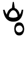 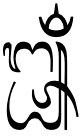.
Modre symbols that include ulu candra.
Musical marks
There is also a set of musical diacritical marks, which are not described here.
᭫␣᭬␣᭭␣᭮␣᭯␣᭰␣᭱␣᭲␣᭳
Numbers
There is a set of Balinese digits, and they are used in the same way as Latin digits.
᭑␣᭒␣᭓␣᭔␣᭕␣᭖␣᭗␣᭘␣᭙␣᭐
However, many of the digit symbols are indistinguishable from other Balinese letters. Numbers are typically surrounded by ᭞[U+1B5E BALINESE CARIK SIKI], so that they are easily recognisable, eg. ᬩᬮᬶ᭞᭓᭞ᬚᬸᬮᬶ᭞᭑᭙᭘᭒᭟
Text direction
Balinese text is written horizontally, left to right.
This section brings together information about the following topics:
writing styles;
cursive text;
context-based shaping;
context-based positioning;
baselines, line height, etc.;
font styles;
case & other character transforms.
Balinese text is not cursive (ie. joined up like Arabic), however there is a significant amount of interaction between glyphs, and some joining, around consonant clusters.
The orthography has no case distinction, and no special transforms are needed to convert between characters.
Context-based shaping & positioning
Balinese text relies on OpenType rules to correctly position glyphs and shape them according to the surrounding text.
One major area where this applies is in the use of conjunct forms for consonant clusters. See the relevant sections for lists of stacked and conjoined shapes.
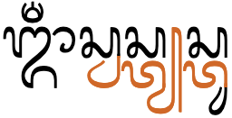
Stacked conjunct forms in the word om swastiastu. Click on the figure to see the composition.
The following is a selection of other examples of contextual shaping and positioning.
After a stacked consonant, the vowel-signs that would normally appear below a base are moved to the side, and the shape is modified.
When a vowel-sign and a syllable-final consonant mark appear over the same base, they are typically drawn side by side. Combinations such as rerekan and above-base vowels are typically stacked.§
Balinese text contains stacks and conjoined pairs that should not be split by line-breaking. These are constructs that encompass more than one grapheme-cluster as defined by the Unicode rules, and so additional rules are needed to handle them properly when splitting text.
For each of the 3 words in fig_grapheme_cluster the colour coding of the glyphs show each of the separate grapheme clusters. In all 3 words there are examples of stacked glyphs containing multiple grapheme clusters, which should not be split during line-breaking.
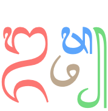
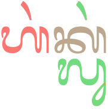
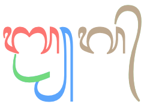
Grapheme clusters in 3 Balinese words.
Observation: The basic unit for Balinese text appears to be a stack of consonants plus all combining characters, where a stack could be a single character, or could have up to 3 consonants joined by adeg-adeg. The combining characters include all vowel-signs, and final consonant marks.
In the Chrome browser, this is the case for cursor movement. The cursor jumps over each of the stacks in ᬓᬓᬵᬓ᭄ᬓᬓ᭄ᬓ᭄ᬬᬓ᭄ᬓ᭄ᬬᬵᬃ one by one. In Firefox, however, the cursor appears to follow Unicode grapheme clusters, which makes it jump inside stacks with adeg-adeg because a grapheme cluster doesn't include the non-combining characters following the base.
Word boundaries
Words are not separated by spaces, and in fact some word boundaries occur between stacked consonants. This means that segmentation for line-breaking, etc. uses orthographic syllables as a unit, where orthographic means a character or stack of characters with all associated combining marks.
In the sequence of words ᬓᬳᬦᬦpŋnkahanan, ᬮᬦpŋnlan, ᬓ᭄ᬯᬲdikkwasa, the initial letter of both the 2nd and 3rd words are subjoined below the last letter of the previous word.
Both ᭚[U+1B5A BALINESE PANTI] and ᭛[U+1B5B BALINESE PAMADA] are used to begin a section in text. At the end of a section, pasalinan᭟᭜᭟ and carik agung᭛᭜᭛ may be used (depending on what sign began the section).
Parentheses & brackets
tbd
Quotations
tbd
Emphasis
tbd
Abbreviation, ellipsis & repetition
tbd
Inline notes & annotations
tbd
Other inline ranges
tbd
Other punctuation
tbd
Line & paragraph layout
Line breaking & hyphenation
Because there are no spaces between words, and because the end of one word and the beginning of another often form conjuncts (see fig_kahananlankwasa2), Balinese doesn't wrap at word boundaries. Instead, it wraps at syllable boundaries where no conjuncts are involved.
Unfortunately, modern browsers are often unable to detect appropriate break points for Balinese, so in the sample text at the beginning of this page [U+200B ZERO WIDTH SPACE] is used at places where the line could be broken. Otherwise, the line would continue, unbroken off the right side of the page.
In lontar texts where a word must be broken at the end of a line (always after a full syllable), the sign ᭠[U+1B60 BALINESE PAMENENG] is inserted. This sign is not used as a word-joining hyphen; it is used only in linebreaking.
Observation: The images appear to show a gap before the pameneng.
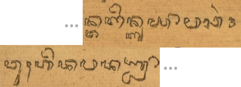A compacted image of a lontar showing a pameneng at the end of a line, with the beginning of the following line below. (Click to see more.)
In online use, an application would need to insert the pameneng, rather than the content author. As line-length is changed by stretching a window, or as content is added earlier in the same paragraph, the location of the word relative to the line edge will change. The insertion of pameneng is only appropriate at those instants when the appropriate sequence of characters appears at the line end.
For an application to use this correctly, it would need to know where the word boundaries are in the text, and then put this character at the end of the line only when a multisyllabic word is broken. This would require a dictionary to be applied to the text, since it would not be appropriate to insert the pameneng at the boundary of 2 words.
Observation: Aditya Bayu Perdana has found instances in lontar where ᬄ [U+1B04 BALINESE SIGN BISAH] is moved to the beginning of a line, alone, while a pameneng appears at the end of the previous line. If this is not just a scribal inconsistency (eg. it's not clear why you wouldn't put the bisah at the end of the line if there's space for a pameneng), it may indicate that this letter should not be a combining mark in Unicode; however, the usage needs to be verified first. See pictures.
Text alignment & justification
According to Sudewa, full justification is not a feature of Balinese text in traditional palm-leaf manuscripts, and only left, or occasionally centred or right alignment is relevant.
Letter spacing
tbd
Counters, lists, etc.
tbd
Styling initials
tbd
Page & book layout
This section is for any features that are specific to Balinese and that relate to the following topics:
general page layout & progression;
grids & tables;
notes, footnotes, etc;
forms & user interaction;
page numbering, running headers, etc.
General page layout & progression
Traditionally, Balinese was written on thin, landscape palm-leaf manuscripts, called lontar.


 which produces the subjoined form. The sequence of characters here is simply
which produces the subjoined form. The sequence of characters here is simply  . The sequence of Unicode characters is
. The sequence of Unicode characters is 

 [
[ [
[
 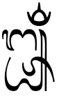.
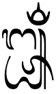.